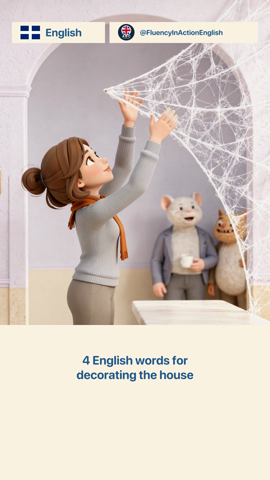
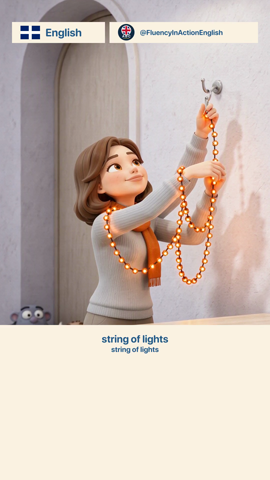
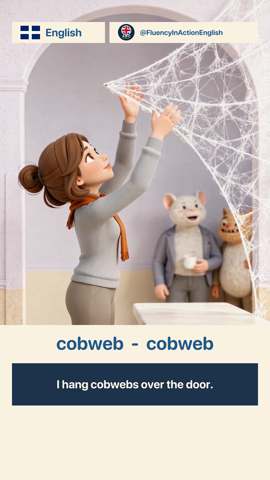

Preview Floor Resolution
Prototype — Wayfinder ticket #117
Where does the proxy preview stop being useful?
ADR-0046 fixed the proxy-preview target at 720p (long-edge capped) but deferred
the floor — the resolution below which preview should hard-refuse
rather than hand back something too degraded to judge a cut from. This renders the
committed fixture at four candidate floors, at the four timestamps carrying its smallest
and densest text, so the call can be made by looking rather than arguing.
Fixture en-halloween-decorating, 1080×1920, 25fpsSource published reference render (ground truth for this exact timeline)Downscale filter bilinear, then scaled back to native for equal-size viewing
Candidate tiers
Long-edge capped per ADR-0046's rule, applied to the fixture's 1080×1920 frame. 720p is the adopted preview target, shown for reference — it is not a floor candidate.
Native 1080 × 1920
720p (target) 720 × 1280
540p 540 × 960
360p 360 × 640
240p 240 × 426
Four stress frames
Chosen from the fixture's own declared text sizes — the smallest run in the file (35px, "word-08") through the largest caption card (58px, "intro"). Each strip is cropped tight to the text region at 3× nearest-neighbor zoom, tier order left to right: native → 720p → 540p → 360p → 240p.

t = 0.5s
Channel handle + chip badge
34–52px — the smallest text in the file, on screen for the full 65s runtime. Densest small-text case: two overlapping labels plus a logo mark.
native 720p 540p 360p 240p

t = 45.0s
Bridge + target caption pair
35px / 49px — the single smallest caption run in the fixture ("string of lights"), stacked two lines.
native 720p 540p 360p 240p

t = 11.5s
Standard subtitle card
55px — the fixture's ordinary caption size, used for the large majority of runtime. The baseline case, not a stress case.
native 720p 540p 360p 240p
t = 62.0s
Quiz recap card
55px — same card geometry as the standard subtitle, at the tail of the video where the reference encoder's bitrate is thinnest.
native 720p 540p 360p 240p
What the crops show
Frame 720p 540p 360p 240p
Handle + chip (34–52px)
clean clean soft, still legible handle blurs into strokes
Bridge/target (35–49px)
clean clean soft, still legible bridge line degrades first
Standard subtitle (55px)
clean clean clean soft, still legible
Quiz recap (55px)
clean clean clean soft, still legible